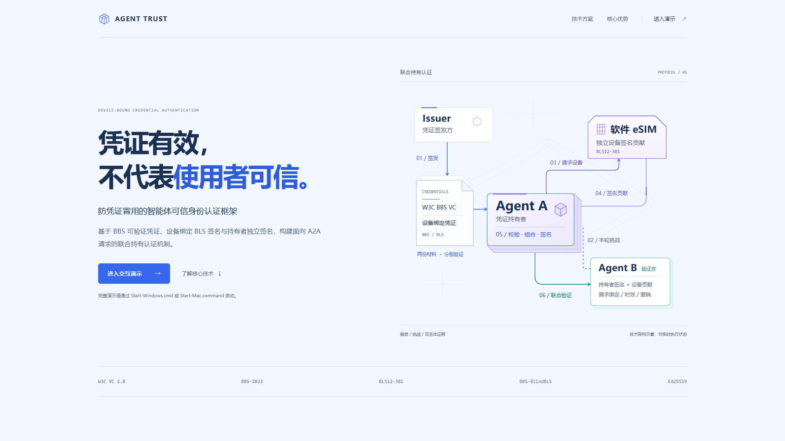
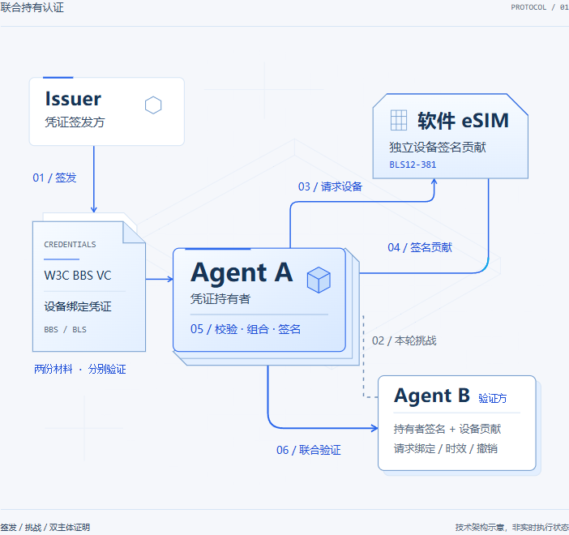
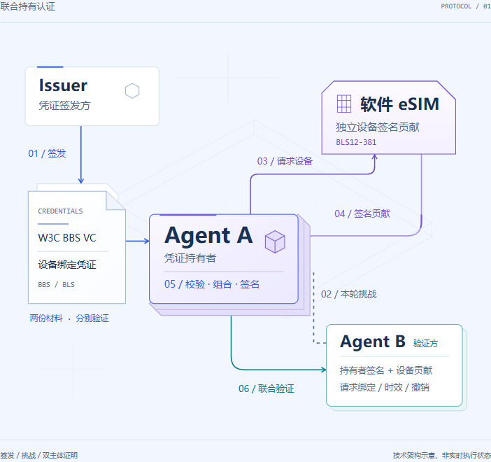
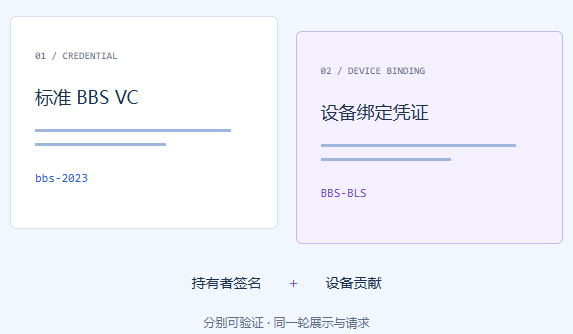
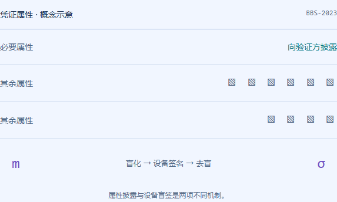
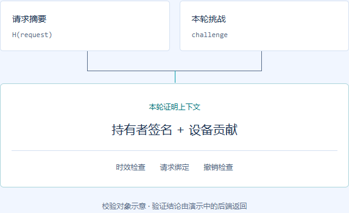

ShoppingAuth · 冰川蓝紫首页
首页保持明亮浅色背景，蓝色负责品牌与常规流程，紫色突出设备参与，青蓝色区分验证方。角色布局、路径与原流光保留，后台控制台未修改。


配色分工
| 页面背景 | #F1F6FF | 导航、首页、架构图的平整冰川蓝底色 |
| 品牌主色 | #3767ED | 主要按钮、Logo、Agent A 主边框 |
| 设备贡献 | #7957D5 | 软件 eSIM、签名贡献、流光与悬停 |
| 验证反馈 | #087884 | 验证箭头、编号和验证方标识 |
| 主要文字 | #1B3151 | 标题及角色名称 |
| 正文 | #526986 | 段落说明与角色描述 |
首页对比


联合持有认证


首页技术模块



检查结果
58 项单元测试、10 项首页交互检查及四种屏宽的配色检查通过。可见 HTML / SVG 文字最低对比度 4.593。所有后台控制台与业务文件逐字节保持原样。
截图来自实际浏览器页面。PNG 是静态图；原 9 秒流光已另行实测。本轮未重跑完整手动支付，macOS 未实机测试。